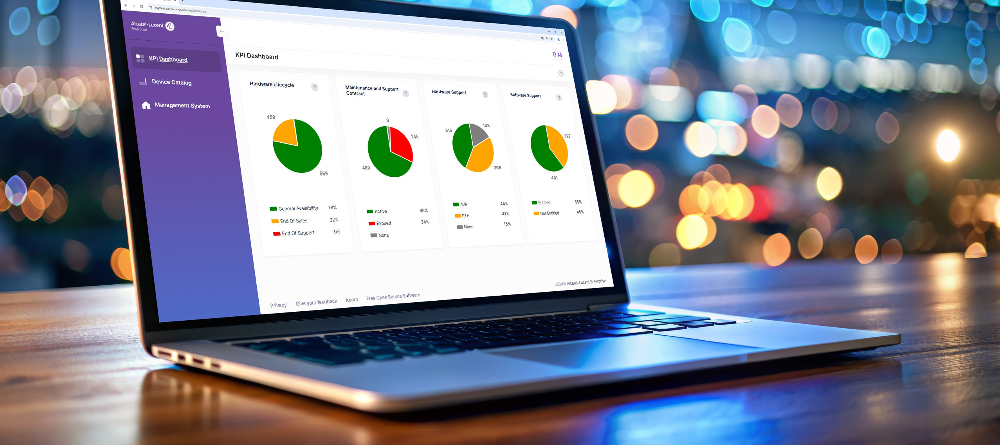

bp-fleet-supervision-sheet

R（何时用）
- 预算有限客户的零成本切入点：先免费提供资产可见价值，再谈付费网管
- 客户要做 OmniSwitch / OmniAccess Stellar 资产盘点、硬件生命周期（EoS/EoL）与换新预算规划
- 欧洲客户 NIS2 等安全法规下的支持合同合规自查
- 盘点分布在多个 OmniVista 管理系统或防火墙后的设备资产
I（核心理念）
Fleet Supervision 是 ALE 免费（Free of charge）、自助注册（Self signup）的在线工具（P8， <span class="pg">原文p5</span> ），面向最终客户与 Fleet Manager，做网络设备资产盘点与支持权益可视化。四大价值合一（P9， <span class="pg">原文p5</span> ）：资产盘点（inventory）、硬件生命周期追踪（end of sales / end of life）、软件版本检查与主动升级规划、故障设备换新流程简化。定位是"资产与支持合规层"，不含网管配置功能（F2）。
A1（选型/决策要点）
- 判断客户痛点是否在"看不见资产/不知道支持状态"——是则 Fleet Supervision 零成本先行
- 盘点结果（老版本软件、临近 EoL 硬件）作为软件升级与换新预算的谈判依据
- 资产采集两条路：自动（多个 OmniVista 管理系统）+ 手工导入序列号（未被管理或防火墙后设备）（P10，
<span class="pg">原文p6</span>） - 欧洲客户强调 NIS2 合规抓手：核实支持合同状态（P11，
<span class="pg">原文p6</span>） - 需要在线发起故障换新 → 前提是有有效的最终客户支持合同
A2（规格细节速查表）
| 能力模块 | 具体内容 | 页码 |
|---|---|---|
| 定位与获取 | 免费在线工具，自助注册 | <span class="pg">原文p5</span> |
| 覆盖设备 | OmniSwitch 与 OmniAccess Stellar 设备（资产与模块统一视图） | <span class="pg">原文p5</span> / <span class="pg">原文p6</span> |
| 资产采集（Asset Collection） | 自动：展示多个 OmniVista 管理系统所管理设备；手工：导入未被管理设备/防火墙后资产序列号 | <span class="pg">原文p6</span> |
| 硬件/软件可视 | 即时查看在用软件版本；设备生命周期与保修即时洞察；跟踪在用/闲置设备 | <span class="pg">原文p5</span> / <span class="pg">原文p6</span> |
| Dashboard & KPI | 支持合同状态核验（NIS2 合规）；服务与支持权益比率；设备生命周期与保修比率；全部软件版本一览；报表导出 | <span class="pg">原文p6</span> |
| 高级服务 | 直接发起故障设备换新¹；按需把库存管理委托给合作伙伴或 ALE | <span class="pg">原文p6</span> |
| 换新前提 | ¹ 仅限有活跃最终客户支持合同的客户（脚注 1） | <span class="pg">原文p6</span> |
- 文档版本：DID24111201EN（2026 年 1 月）（
<span class="pg">原文p6</span>）
E（适用场景案例）
- 先给客户免费价值再谈付费网管 → Fleet Supervision 先行，据盘点结果推动升级与换新预算（C9，
<span class="pg">原文p5</span>/<span class="pg">原文p6</span>） - 多套 OmniVista 系统分头管理的分散资产 → 自动汇聚成统一库存视图（
<span class="pg">原文p6</span>） - 防火墙后/未被纳管的设备 → 手工导入序列号补全台账（
<span class="pg">原文p6</span>） - NIS2 合规检查年审 → 支持合同状态 + 权益比率仪表盘出报表（
<span class="pg">原文p6</span>）
B（限制与订购坑）
- 在线发起故障换新需有效最终客户支持合同，无合同不能用该功能（X15，
<span class="pg">原文p6</span>） - 只是盘点合规层，不含网管配置/监控功能；与 OmniVista 平台是互补非替代（F2）
- 覆盖范围限于 OmniSwitch 与 OmniAccess Stellar 资产，第三方设备不在内（
<span class="pg">原文p5</span>/<span class="pg">原文p6</span>）
来源：bp-nms-brochures · ale-network-fleet-supervision-solution-sheet-en.pdf（DID24111201EN，2026-01），p5-6
仅供内部学习使用 · 教材版权归 ALE Training Services 所有